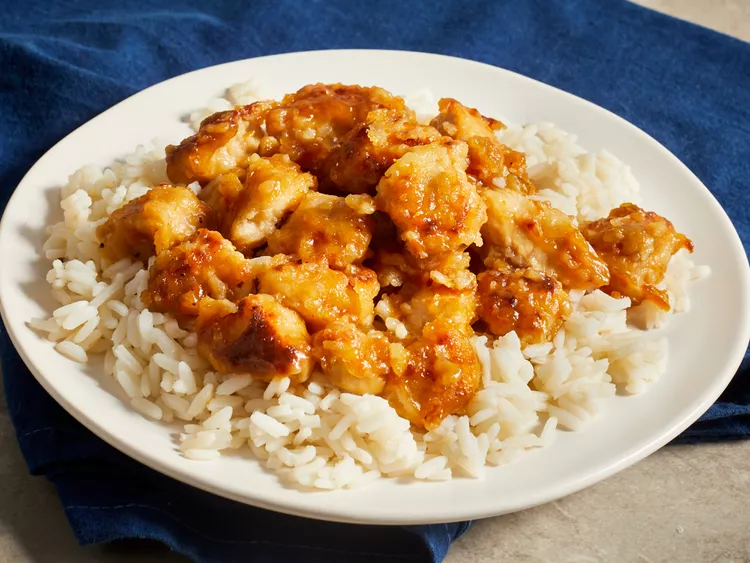

Asian Orange Chicken

Description
Orange chicken is a popular item at Chinese restaurants. It consists of small cubes of chicken that are breaded,
pan-fried, and coated in an orange sauce.
The orange sauce is sweet with a little tang and a hint of spice. It's mainly known for its orange flavor
It's typically made with orange juice and orange zest to achieve the citrus flavor.
Ingredients
- 1 cups water
- 1/3 cup rice vinegar
- 1/4 cup lemon juice
- 2 tablespoon orange choice
- 2 table spoons soy sauce
- 1/2 teaspoon minced garlic
- 3 tablespoons cornstarch
- 2 large skinless boneless chicken breast
- 1/4 teaspoon salt
- 3 tablespoon olive oil
- 1/4 tablespoon pepper
Directions
- Combine water, rice vinegar, lemon juice, soy sauce, and orange juice for sauce into a saucepan over medium-high heat.
Stir in brown sugar, green onion, orange zest, ginger, garlic, and pepper flakes; bring to a boil.
- Place chicken in a resealable plastic bag. Pour in 1 cup cooled sauce. Seal the bag, and refrigerate for at least 2 hours.
- Mix flour, salt, and pepper in another resealable plastic bag.
- Remove chicken from the marinade and place into the bag of seasoned flour. Seal the bag and shake to coat.
- Heat the olive oil in a large skillet over medium heat. Cook chicken in the hot skillet until browned on both sides.
- Pour reserved sauce into the skillet and bring to a boil over medium-high heat.
- Mix together cornstarch and water until completely smooth. Stir into the boiling sauce.
- Reduce heat to medium-low, add the chicken, and simmer, stirring occasionally, until cooked through, about 5 minutes.
Return to Main Page